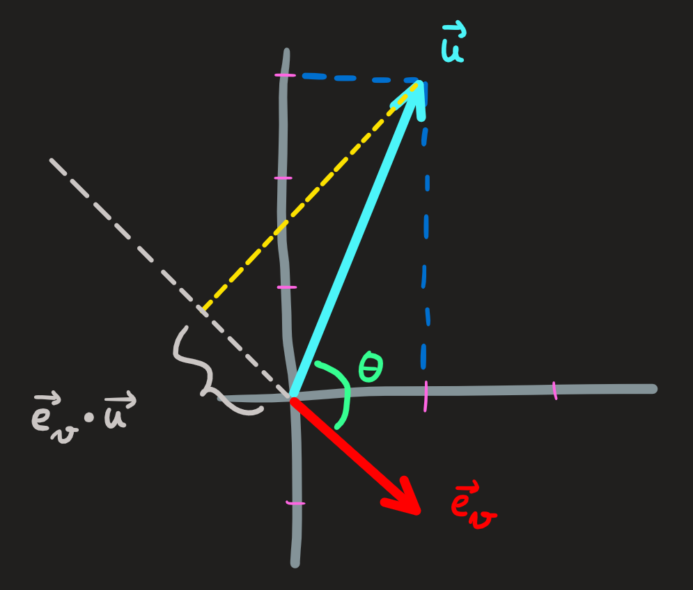
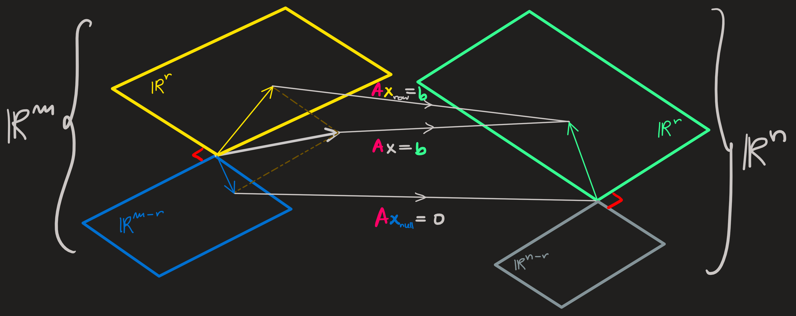

Inner Product
Definition of inner product and its properties
Linear combinations we also have a inner product operation \(\cdot\) which is an operation between vectors and yields a number, it is defined as:
Definition 1 Let \(\mathbf{u}\) and \(\mathbf{v}\) be two vectors from the same vector space \(\mathbb{R}^n\) (i.e. \(\mathbf{u}=(u_1,\dots,u_n)\) and \(\mathbf{v}=(v_1,\dots,v_n)\)). The inner product of these two vectors is the real number of the form:
\[ [\text{inner product between}\,\, \mathbf{u}\,\, \text{and} \,\,\mathbf{v}]:=\mathbf{u}\cdot\mathbf{v} = u_1v_1+\dots+u_nv_n =: \sum_{i=1}^nu_iv_i \]
Another notation for this number/operation is \(\mathbf{u}^\intercal\mathbf{v}\).
The inner product also results from the calculation \(\mathbf{u}\cdot\mathbf{v} = uv\cos\theta\).
Properties:
it obeys the property of linearity
\[ \mathbf{u} \cdot (\mathbf{v} + \lambda \cdot \mathbf{w}) = \mathbf{u}\cdot \mathbf{v} + \lambda \mathbf{u}\cdot \mathbf{w} \] where \(\lambda\) is any real number. The scalar product \(\mathbf{u}\cdot \mathbf{v}\) is a number, \(\mathbf{u}\cdot \mathbf{w}\) is a number, the right hand side of this formula is a number, as is the left.
The order of the vectors being dotted is irrelevant \(\mathbf{u}\cdot\mathbf{v} = \mathbf{v}\cdot\mathbf{u}\) and \(\mathbf{u}^\intercal\mathbf{v} = \mathbf{v}^\intercal \mathbf{u}\).
Since \(-1\leq\cos\theta\leq 1\), then \(-uv\leq\mathbf{u}\cdot\mathbf{v} \leq uv\).
(Pythagoras theorem) If two vectors are orthogonal, then \(|\mathbf{u}+\mathbf{v}|^2=u^2+v^2\). [Commentary: Two orthogonal vectors can come about when decomposing a single vector \(\mathbf{w}\in\mathbb{R}^n\) in two complementary spaces \(\mathbb{R}^n=U\oplus U^\perp\).]
(Cauchy-Schwarz inequality aka triangular inequality) For any vectors \(\mathbf{u}\) and \(\mathbf{v}\) we have the following: \(|\mathbf{u}+\mathbf{v}|\leq u+v\). Equality holding when the vectors are parallel and pointing in the same sense.
Usefulness: The inner product operation is a tool to gather geometrical information about vectors, and to describe planes and hyperplanes.
I.e. it allows answering the following questions:
What is the length of a vector?
Answer: Compute the inner product of a vector with itself.
\[ \mathbf{u}^\intercal\mathbf{u} = u_1^2+\dots+u_n^2 \]
Whose rhs we interpret, using the Pythagoras theorem, as the length square of \(\mathbf{u}\). The norm \(|\mathbf{u}|\) of the vector is the square-root of this value:
\[ |\mathbf{u}|:=\sqrt{u_1^2+\dots+u_n^2} \]
Notation: we can call the norm \(|\mathbf{u}|\) just by \(u\).
Example:
The length squared of the vector \(\mathbf{u}=(1,2)\) is:
\[ |\mathbf{u}|^2 = \mathbf{u}^\intercal\mathbf{u} = u_1^2+u_2^2 = 1^2+2^2=1+4=5 \]
The norm of the vector is obtained by taking the square root of \(5\):
\[ u=\sqrt{5} \]
Another way to compute the norm-squared of a vector is to consider \(\mathbb{R}^2=[\textbf{x axis}]\oplus[\textbf{y axis}]\) and write \(\mathbf{u} = (0,1)+(2,0)\) and then use the pythagoras theorem \(|\mathbf{w}+\mathbf{v}|^2=w^2+v^2\) to compute:
\[ |\mathbf{u}|^2=|(0,1)+(2,0)|^2=(0^2+1^2)^2+(2^2+0^2)^2=1+4=5 \]
Then take the square-root.
Exercises: 1.6.1a
How to build a unit vector?
Starting with the vector \(\mathbf{u}=(u_x,u_y)\) we can define a parallel unit vector by dividing it by it length:
\[ \mathbf{e}_u = \frac{\mathbf{u}}{|\mathbf{u}|} \]
Justification: Compute its norm \(|\mathbf{e}_u|^2 = \frac{\mathbf{u}}{|\mathbf{u}|}\cdot \frac{\mathbf{u}}{|\mathbf{u}|}=\frac{|\mathbf{u}|^2}{|\mathbf{u}|^2}=1\)
Example:
The unit vector along \(\mathbf{u}=-(1,2)\) is:
\[ \mathbf{e}_u = \frac{-(1,2)}{\sqrt{1+2^2}}=-\frac{1}{\sqrt{5}}(1,2) \]
Clearly: \(|\mathbf{e}_u|^2 = -\frac{1}{\sqrt{5}}(1,2)\cdot (-\frac{1}{\sqrt{5}}(1,2))=\frac{1}{5}(1+2^2)=1\)
How to build a perpendicular vector?
Example: Given again the vector \(\mathbf{n}=(1,2)\), a vector \(\mathbf{r}\) perpendicular to it if it obeys \(\mathbf{n}^\intercal \mathbf{r}=0\). Solving this equation for \(\mathbf{r}\) we find:
\[ (1,2)\cdot (x,y)=0 \implies x+2y=0 \]
[Comment: This is a very simple \(A\mathbf{x}=\mathbf{0}\) type of problem, its already fully simplified] One equation with two unknowns, we must promote one to parameter: choose \(x=-2\), then \(y=1\). Thus \((-2,1)\) is perpendicular to \((1,2)\). This is not the only solution.
How to define a circles, lines, planes and hyperplane?
Circle and spheres: A circle in \(\mathbb{R}^2\) or a sphere in \(\mathbb{R}^3\) centered at \(\mathbf{0}\) satisfy the equation: \(|\mathbf{r}|^2=R^2\) where \(R\) is the radius. Centered at \(\mathbf{r}_0\) they obey \(|\mathbf{r}-\mathbf{r}_0|^2=R^2\). The geometry of the situation should clearly justify the equations.
Line in \(\mathbb{R}^2\): A line perpendicular to \(\mathbf{n}=(1,2)\) is the set of all solutions (not just one) to the equation \(\mathbf{n}^\intercal \mathbf{r}=0\), the answer is:
\[ [\textbf{line}\,\perp\,\textbf{to}\,\,(1,2)]=\{(-2c,c)\,\,|\,\,c\in \mathbb{R}\} \]
Line in \(\mathbb{R}^3\): A line (which crosses the origin) is the interception of two non-parallel planes (which cross it as well); a plane is the subspace perpendicular to a vector. Let \(\mathbf{n}_1=(1,0,1)\) and \(\mathbf{n}_2=(1,2,0)\) define the two planes \(\mathbf{n}_{1,2}^\intercal \mathbf{r}=0\). The interception is the set of vectors common to both planes, this means we have to find the \(\mathbf{r}=(x,y,z)\in\mathbb{R}^3\) such that both plane equations are satisfied, i.e.
\[ \begin{cases} \mathbf{n}_{1}^\intercal \mathbf{r}=0\\ \mathbf{n}_{2}^\intercal \mathbf{r}=0 \end{cases} \leftrightsquigarrow \left(\begin{matrix}1 & 0 & 1\\1 & 2 & 0 \end{matrix}\;\middle|\;\begin{matrix}0\\0 \end{matrix}\right) \overset{l_2'=l_2-l_1}{\longrightarrow} \left(\begin{matrix}1 & 0 & 1\\0 & 2 & -1 \end{matrix}\;\middle|\;\begin{matrix}0\\0 \end{matrix}\right) \overset{l_2'=1/2l_2}{\longrightarrow}\left(\begin{matrix}1 & 0 & 1\\0 & 1 & -1/2 \end{matrix}\;\middle|\;\begin{matrix}0\\0 \end{matrix}\right) \tag{1}\]
There are two pivots in the first two columns and a dependent column, one solution is \((-1,1/2,1)\), in general we have:
\[ \mathbf{x}_N = c\left(\begin{matrix}-1\\1/2\\1\end{matrix}\right) \]
which is the form of the elements along a line!
\[ [\textbf{line}\,\perp\, \textbf{to}\,\, \mathbf{n}_{1,2}] = \{(-c,c/2,c)\,\,|,\, c\in \mathbb{R}\} \]
Captain obvious: If we know the process of finding all vector (the line) perpendicular to these two vector, I can find just one vector perpendicular to both.
A plane in \(\mathbb{R}^3\): The subspace perpendicular to \((1,0,1)\) is the solution of \((1,0,1)\cdot (x,y,z)=0\), because there are two free columns and one pivot we expect null space \(N(1,0,1)\) with two dimensions. Setting the free variable \(y=1\) and \(z=0\) we find \(x=-1\), hence \(\mathbf{x}_{N,1}=(-1,1,0)\); setting \(y=0\) and \(z=1\) we arrive at \(\mathbf{x}_{N,2}=(-1,0,1)\). Any l.c. of these solutions is a solution of the equation:
\[ \mathbf{x}_N=\alpha\left(\begin{matrix}-1\\1\\0 \end{matrix}\right)+\beta\left(\begin{matrix}-1\\0\\1 \end{matrix}\right) \]
which defines a plane containing \(\mathbf{0}\).
Hyperplane: The idea is similar, just define the appropriate interception of subspaces perpendicular to the given vectors, then arrange the equations as an \(A\mathbf{r}=\mathbf{0}\) problem.
How much a vector looks like another vector?
Example 1
The formula \(\mathbf{u}\cdot\mathbf{v} = uv\cos\theta\) is of great importance because it allow us to compute the angle between \(\mathbf{u}\) and \(\mathbf{v}\). Let \(\mathbf{u} = (1,2)\) and \(\mathbf{v}=(-2,3)\):
Then the angle, is obtained by solving the trigonometric equation:
\[ \cos \theta = \frac{\mathbf{u}^\intercal\mathbf{v}}{uv}=\frac{1\cdot (-2)+2\cdot 3}{\sqrt{1+2^2}\sqrt{2^2+3^2}}=\frac{4}{\sqrt{65}}\implies \theta \approx 1\,\, rad \]
[write \(\frac{1\cdot (-2)+2\cdot 3}{(1+2^2)(2+3^2)}\) on white board rather than \(\frac{1\cdot (-2)+2\cdot 3}{\sqrt{(1+2^2)(2+3^2)}}\) and ask for where is the mistake.]
Another way to evaluate similarity is through the value of the cosine, in this case \(\cos \theta\) is \(4/\sqrt{85}\) which is about \(1/2\).

Since the \(\theta\) is smaller than \(\pi/2\), then the angle acute which means the vectors are not very similar, but at least point in the same direction.
Example 2
If we now let \(\mathbf{u} = (1,-2)\) and \(\mathbf{v}=(-2,3)\), then the angle is: \(\theta \approx 0.95 \pi \,\,rad\). Almost \(180^\circ\), very different vectors. The inner product by being negative already tells us that the vectors point in almost opposite directions.
For this \(\mathbb{R}^2\) examples, the calculation of the angle or the cosine is rather useless because we can easily draw both vectors and check whether they are or not similar. A harder task is when we try to do this in three, four, etc dimensions.
Example 3:
Let \(\mathbf{u} = (1,2)\) and the unitary vector \(\mathbf{e}_v=(1,-1)/\sqrt{2}\):

Computing the inner product two ways we find:
\[ \mathbf{e}_v\cdot \mathbf{u} = -\frac{1}{\sqrt{2}}=5\cos \theta \]
On the rhs we see using trigonometry, the projection (shadow) of the vector \(\mathbf{u}\) along the vector \(\mathbf{e}_v\), which is this case is negative, implying the vectors point in different directions.
Thus the matrix \(\mathbf{v}^\intercal/v\) is a projector along \(\mathbf{v}\).
Example 4
This time we start with \(\mathbf{e}_x\) and \(\mathbf{e}_x\), the unitary vector \((1,0)\) or \((0,1)\), and keep the usual \(\mathbf{u}=(1,2)\). The inner products yields:
\[ \begin{cases} \mathbf{e}_x^\intercal \mathbf{u}=1\\ \mathbf{e}_y^\intercal \mathbf{u}=2\\ \end{cases} \]
Moreover:
\[ \begin{cases} \mathbf{e}_x^\intercal \mathbf{u}=5\cos\theta_x\\ \mathbf{e}_y^\intercal \mathbf{u}=5\cos\theta_y=5 \sin\theta_x \end{cases} \]
Which means geometrically:

Dotting a vector with an unitary vector yields \(5\cos\theta_x\) and \(5\cos\theta_y\) which using trigonometry are the projections of \(\mathbf{u}\) along those directions, which in turn is are the entries \(1\) and \(2\) of the vector along the unitary vectors.
We conclude that, given a basis \(B=\{\mathbf{e}_x, \mathbf{e}_y\}\) we can write the vector \(\mathbf{u}=(1,2)\) as:
\[ \mathbf{u} = (\mathbf{e}_x\cdot\mathbf{u})\mathbf{e}_x+(\mathbf{e}_y\cdot\mathbf{u})\mathbf{e}_y= 1\mathbf{e}_x+2 \mathbf{e}_y \]
Which means: \([\mathbf{u}]_B=(\mathbf{e}_x\cdot\mathbf{u},\mathbf{e}_y\cdot\mathbf{u})\)
Exercises: 1.7.5
Orthogonal spaces
Two subspaces are orthogonal if every vector in one is orthogonal every vector in another. For example:
Far left: The two subspaces of \(\mathbb{R}^2\) on the left are orthogonal. Only the origin is common. If we introduce a basis for both \(U=span\{\mathbf{e}_u\}\) and \(V=span\{\mathbf{e}_v\}\) we can say \(\mathbb{R}^2 = U\oplus V\) and that \(U\) is the orthogonal complement of \(V\). Notice the dimension \(n=2\) of the space is equal to the sum of the dimensions of the two subspaces: \(\dim \mathbb{R}^2 = \dim U +\dim V\).
Middle Left: The two subspaces (shown as rectangles) of \(\mathbb{R}^3\) are not orthogonal because at the interception we find vectors which are parallel and thus not orthogonal. More than the origin is common to both, the y-axis is as well.
Middle right: We have again two orthogonal subspaces. Only the origin is common. Introducing basis to both subspaces \(U=span\{\mathbf{e}_x,\mathbf{e}_y\}\) and \(V=span\{\mathbf{e}_z\}\), we see that \(\mathbb{R}^3=U\oplus V\). Again we see the dimension \(3\) of \(\mathbb{R}^3\) is equal to the sum of the dimensions of the orthogonal complements.
Far right: Finally we have two orthogonal subspaces, but we cannot write \(\mathbb{R}^3 = U\oplus V\). At most we can only say: \([\textbf{xy plane}] = U\oplus V\).
These examples, motivate us to introduce the following definitions:
Definition 2 [\(U\) is orthogonal to \(V\)] \(:=\) [Every vector \(\mathbf{u}\in U\) is orthogonal to every \(\mathbf{v}\in V\)]
[orthogonal complement of \(U\) in \(\mathbb{R}^n\)] \(:=U^\perp:=\{\mathbf{v}\in\mathbb{R}^n\,\,|\,\, \forall \mathbf{u}:\mathbf{u}^\intercal\mathbf{v}=0\}\)
Note: orthogonal complement of \(U\) in \(\mathbb{R}^n\) is the subspace that complements \(U\) to gives us \(\mathbb{R}^n\), i.e., it is the solution \(U^\perp\) of \(\mathbb{R}^n = U\oplus U^\perp\). Clearly the sum of dimensions of both spaces must be \(n\).
How to define a basis for a subspace orthogonal to another given subspace?
Essentially what is being asked is to solve \(U\oplus U^\perp=\mathbb{R}^n\) given \(U\). And since \(U^\perp\) has all its vectors perpendicular to \(U\), it is the nullspace of a matrix whose rows are the basis of \(U\).
Example: consider the subspace given by \(U=span\{(1,0,1),(1,2,0)\}\). Define a basis for \(U^\perp\).
If we find the set of vectors perpendicular to these basis vectors, we found the set perpendicular to every element of this span. But finding this set is the same as solving Equation 1 ! Thus
\[ U^\perp=[\textbf{line}\,\perp\, \textbf{to}\,\, \mathbf{n}_{1,2}] = \{(-c,c/2,c)\,\,|,\, c\in \mathbb{R}\} \]
A basis for \(U^\perp\) is for example \((-1,1/2,1)\). If we want it normalized we have \((-1,1/2,1)/\sqrt{(-1)^2+(1/2)^2+1^2}\).
Exercise: 1.7.3
Four very important subspaces
For a given matrix \(A\) with shape \(n\times m\) we already defined the column space \(C(A)\) which is a subspace of \(\mathbb{R}^n\) and the nullspace \(N(A)\) which is a subspace of \(\mathbb{R}^m\). Recall the matrix
\[ A=\begin{pmatrix}1 & 2 & 2 & 2 \\2 & 4 & 6 & 8 \\3 & 6 & 8 & 10 \end{pmatrix} \]
The column space is the first and third column (because they are independent); its dimension is the number of pivots, in this case \(2\); it is a subspace of \(\mathbb{R}^3\).
\[ C(A)=span\{\begin{pmatrix}1\\2\\3\end{pmatrix},\begin{pmatrix}2\\6\\8\end{pmatrix}\} \]
While the nullspace was obtained by solving \(A\mathbf{x}_N=\mathbf{0}\), its dimension is the number of dependent columns, which is the number of columns \(m=4\) minus the number of pivots \(r=2\) (number of independent columns); it is a subspace of \(\mathbb{R}^4\).
\[ N(A) = span\{(-2,1,0,0),(2,0,-2,1)\} \]
Now we’ll introduce their orthogonal complements in the \(\mathbb{R}^3\) and \(\mathbb{R}^4\) respectively.
Left Nullspace
\(C(A)^\perp\) is the set of all vectors perpendicular to every vector in \(C(A)\). It is the nullspace of \(A^\intercal\), aka, left nullspace \(N(A^\intercal)\).
Why is this so?
Row space
\(N(A)^\perp\) is the set of all vectors perpendicular to every vector in \(N(A)\). It is the column space of \(A^\intercal\), aka, row space.
Why is this so?
Observations:
We know then:
\[ \mathbb{R}^n = C(A) \oplus N(A^\intercal)\qquad \mathbb{R}^m=C(A^\intercal)\oplus N(A) \]
Since \(\dim C(A) = \dim C(A^\intercal) =r\), \(\dim N(A) =n-r\) and \(\dim N(A^\intercal) =m-r\) we can verify that:
\[ n = \dim C(A) + \dim N(A^\intercal) \qquad m = \dim C(A^\intercal)+\dim N(A) \]
Pictorially we find:

Any vector \(\mathbf{x}\) lives in \(\mathbb{R}^m\), it has as many entries as there are columns in the matrix it multiplies. Since this space is broken down into two complements \(\mathbb{R}^m=C(A^\intercal)\oplus N(A)\) we can write \(\mathbf{x}=\mathbf{x}_\text{row}+\mathbf{x}_\text{null}\), the entries of each being in the canonical basis. We can see now why finding a particular solution we chose the free variables as zero. In that way, the particular solution lives solely in the row space (though it need not to)
What happens when we multiply \(\mathbf{x}\) by \(A\)? Answer: We “project” \(\mathbf{x}\) written in the canonical basis into each row the row space (we use “project” because, the inner product is being made with most probably non orthogonal and non normalized rows), the components of that projection is the vector \(\mathbf{b}\). The same “projection” would be obtained if we use \(\mathbf{x}_\text{row}\) instead, since this is written in the canonical basis, we just compute its components (times the row length) along each row.
Gram-Schmidt orthogonalization
Goal: From a set of independent vectors to obtain a set of orthogonal vectors.
Idea: First consider one of the vectors of the list, say \(\mathbf{q}_1\), as being fixed. Choose a second vector of the list, for example \(\mathbf{q}_2\), to make it orthogonal to \(\mathbf{q}_1\), I just need to project \(\mathbf{q}_2\) on \(\mathbf{q}_1\) and then remove from \(\mathbf{q}_2\) this projection; what is left in \(\mathbf{q}_2\) is orthogonal to \(\mathbf{q}_1\), call this remainder as \(\mathbf{q}_2^\perp\). Choose a third vector \(\mathbf{q}_3\) from the list, we want to make it perpendicular to \(\mathbf{q}_1\) and \(\mathbf{q}_2^\perp\), to do that we have to project it on the plane formed by \(\mathbf{q}_1\) and \(\mathbf{q}_2^\perp\), then we remove from \(\mathbf{q}_3\) this projection, once again what is left is the perpendicular part \(\mathbf{q}_3^\perp\) to the plane. And so on…
To orthogonalize the following list of vectors \(\{\mathbf{q}_1,\mathbf{q}_2,\mathbf{q}_3\}\):
Fix \(\mathbf{q}_1\).
Remove from \(\mathbf{q}_2\) the projection part on \(\mathbf{q}_1\):
\[ \mathbf{q}_2^\perp = \mathbf{q}_2-\frac{\mathbf{q}_1\mathbf{q}_1^\intercal}{\mathbf{q}_1^\intercal\mathbf{q}_1}\mathbf{q}_2 \]
Remove from \(\mathbf{q}_3\) the projection on \(\mathbf{q}_1\) and \(\mathbf{q}_2^\perp\) (i.e. the projection on the plane formed by both):
\[ \mathbf{q}_3^\perp = \mathbf{q}_3-\frac{\mathbf{q}_1\mathbf{q}_1^\intercal}{\mathbf{q}_1^\intercal\mathbf{q}_1}\mathbf{q}_3-\frac{\mathbf{q}_2^\perp(\mathbf{q}_2^\perp)^\intercal}{(\mathbf{q}_2^\perp)^\intercal\mathbf{q}_2^\perp}\mathbf{q}_3 \]
The expression \(\mathbf{q}^\intercal \mathbf{q}\) found in the denominator in these expression is the norm square \(|\mathbf{q}|^2\) of the vectors in the numerator. Clearly dividing both by their norm yields unitary vectors, which is exactly what we need to compute the projections. We can see the matrix \(\mathbf{q}\mathbf{q}^\intercal/\mathbf{q}^\intercal \mathbf{q}\) as a projection matrix along the vector \(\mathbf{q}\).
Exercise: 1.7.6,7,8